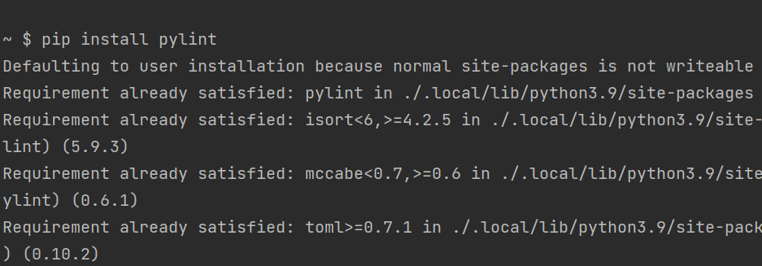

Step 1: Installing pylint. In the terminal enter "pip install pylint"
Step 1: Installing pylint. In the terminal enter "pip install pylint"
Step 2: A basic function not conforming to PEP8 standards.
Step 3: Now to lint our program. In terminal, enter "pylint {filename}". Our class may work, but it's not very readable. Let's now implement the requirements suggested by Pylint